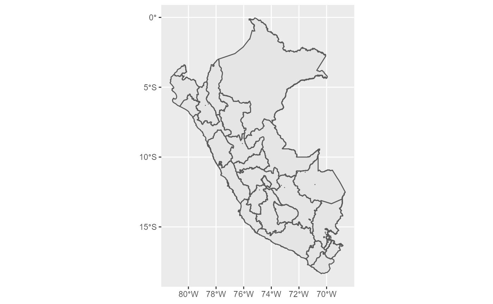
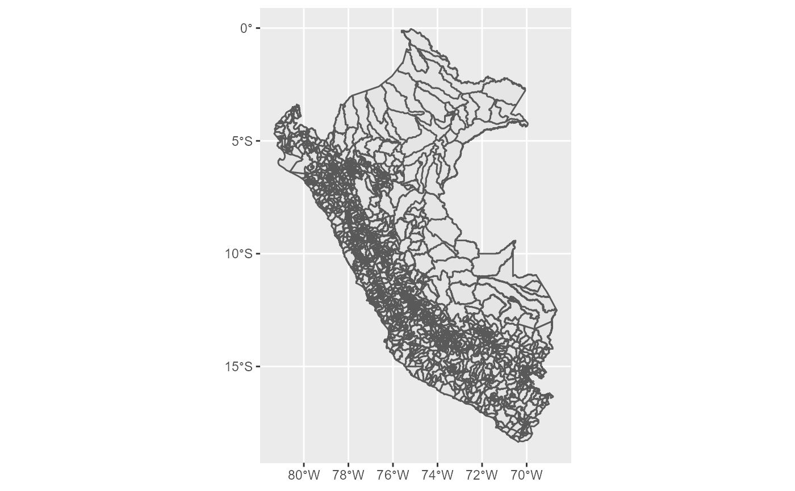

perumapas
El paquete perumapas contiene tres conjuntos de datos con las geometrías necesarias para dibuajr mapas de al división política administrativa del Perú a nivel distrital, provincial y regional. Para poder usar estos mapas, es necesario usar al mismo tiempo el paquete sf, que permite manipular las geometrías en formato simple features.
Para fines de este documento, se carga también los paquets dplyr y ggplot2 para la manipulación del conjunto de datos y creación de mapas, respectivamente. Se omiten los messages de carga.
Para dibujar los mapas, usaremos la función geom_sf() del paquete ggplot2. Por defecto, usará la columna geometry del conjunto de datos para el dibujo.
El conjunto de datos mapa_regional contiene la información necesaria para elaborar mapas con las divisiones regionales.

Para obtener el mapa de una región determinada, basta con agregar una línea de código de filtrado.
Para obtener el gráfico con nivel de resumen provincial, se puede utilizar mapa_provincial. Se debe tomar en cuenta que mientras mayor sea la cantidad de unidades (provincias), los recursos computacionales necesarios para generar el mapa aumentarán.
Del mismo modo, si se requiere dibujar las provincias de alguna región en específico, basta con agregar una línea de filtrado.
Para un gráfico departamental, usar mapa_regional.
El nivel de detalle más alto se obtiene con el conjunto de datos mapa_distrital.

Nuevamente, se debe tomar en cuenta los recursos computacionales necesarios para elaborar (renderizar) el mapa. Me tomó alrededor de 4 segundos con una CPU Ryzen 5 3600 6-Core 3.69GHz RAM 16GB GPU Rx 580 8GB.
Una manera de personalizar los mapas es creando grupos de distritos o provincias según algún criterio. Por ejemplo, podemos obtener el mapa de Lima Metropolitana por zonas. Para ello, perumapas provee el conjunto de datos zonas_lima.
zonas_lima
#> # A tibble: 43 x 3
#> distrito ubigeo zona
#> <chr> <chr> <chr>
#> 1 LIMA 150101 Centro
#> 2 ANCÓN 150102 Norte
#> 3 ATE 150103 Este
#> 4 BARRANCO 150104 Centro
#> 5 BREÑA 150105 Centro
#> 6 CARABAYLLO 150106 Norte
#> 7 CHACLACAYO 150107 Este
#> 8 CHORRILLOS 150108 Centro
#> 9 CIENEGUILLA 150109 Este
#> 10 COMAS 150110 Norte
#> # ... with 33 more rowsAl hacer un join/merge con mapa_distrital se puede recalcular las geometrías para dibujar el mapa por zonas.
mapa_lima_zonas <- mapa_distrital %>%
filter(departamento == "LIMA", provincia == "LIMA") %>%
left_join(zonas_lima, by = "ubigeo") %>%
group_by(zona) %>%
summarise(geometry = st_union(geometry))Una vez recalculadas las geometrías, el mapa se genera igual que en los casos anteriores.
Es posible colorear los mapas según algún otro criterio. Por ejemplo, los distritos de Lima según la zona en la que se ubican. Para ello, nuevamente podemos hacer uso de zonas_lima y el atributo fill del mapa.
Además de colorear por valores categóricos, es posible mapear el relleno del mapa según valores numéricos. Para este ejemplo se usará el mapa de pobreza de Lima 2018 del paquete perupobreza2018.
library(perupobreza2018)
pobreza_lima <- pobreza2018 %>%
filter(region == "LIMA", provincia == "LIMA") %>%
select(distrito, ubigeo, pobreza_monetaria)Este conjunto de datos brinda, entre otras cosas, el porcentaje de población en condiciones de pobreza monetaria para cada distrito.
pobreza_lima
#> # A tibble: 43 x 3
#> distrito ubigeo pobreza_monetaria
#> <chr> <chr> <dbl>
#> 1 PUCUSANA 150124 23.8
#> 2 PUENTE PIEDRA 150125 22.7
#> 3 SANTA ROSA 150139 22
#> 4 INDEPENDENCIA 150112 20.6
#> 5 VILLA EL SALVADOR 150142 20.2
#> 6 PACHACÁMAC 150123 20
#> 7 ANCÓN 150102 19.2
#> 8 PUNTA HERMOSA 150126 19.2
#> 9 CARABAYLLO 150106 19.2
#> 10 LURÍN 150119 18.3
#> # ... with 33 more rowsDebido a que se cuenta con el ubigeo, es posible hacer el join/merge con los mapas.
mapa_pobreza_lima <- mapa_distrital %>%
filter(departamento == "LIMA", provincia == "LIMA") %>%
left_join(pobreza_lima, by = "ubigeo")Con esta información, es posible obtener el mapa de pobreza de Lima, los colores indican el porcentaje de pobreza monetaria.
Por supuesto, también se puede crear una escala de colores manualmente usando scale_fill_gradient2().
mapa_pobreza_lima %>%
ggplot() +
geom_sf(aes(fill = pobreza_monetaria)) +
scale_fill_gradient2(low = "green",
mid = "yellow",
high = "darkred",
midpoint = 10)